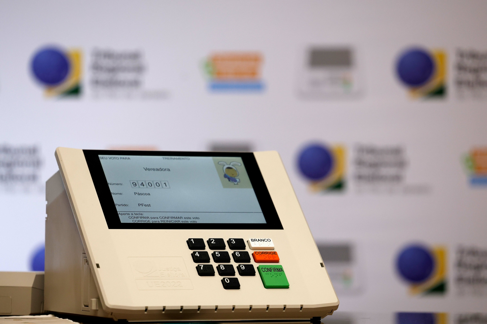
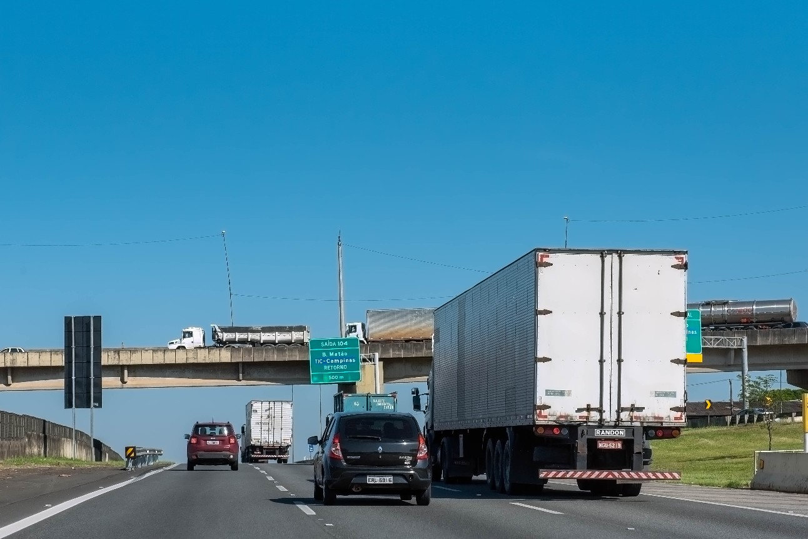
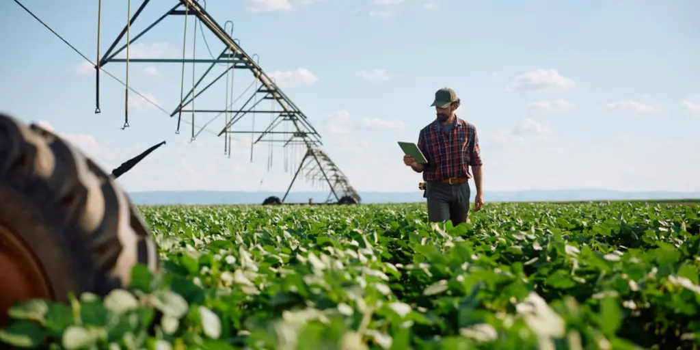
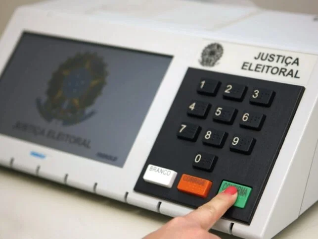
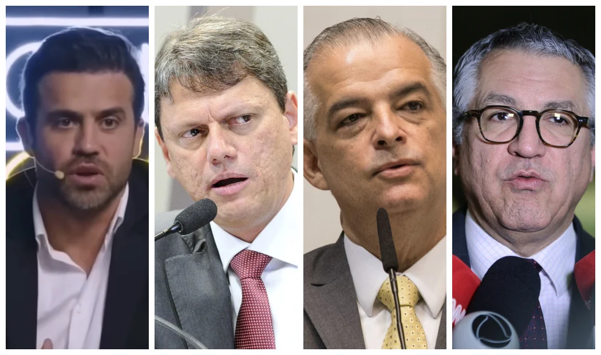
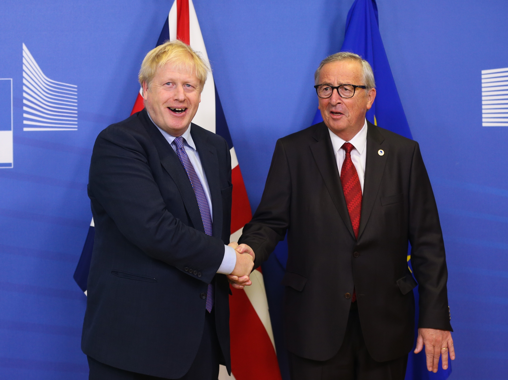
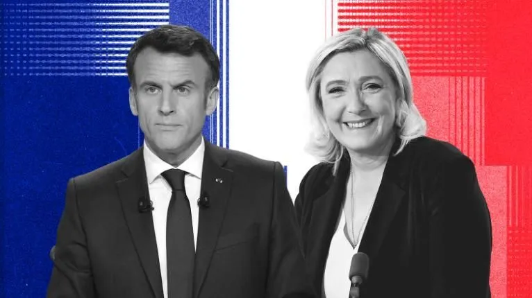

Em vários estados brasileiros, governadores que buscam reeleição estão se preparando para campanhas intensas nas eleições de 2026. Nos estados de São Paulo, Minas Gerais, Rio de Janeiro e Bahia, a disputa promete ser polarizada, com vários candidatos de diferentes partidos disputando o cargo. Entre os nomes que devem disputar a reeleição estão Rodrigo Garcia (PSDB) em São Paulo e Rui Costa (PT) na Bahia. Já no Rio de Janeiro e Minas Gerais, a disputa deverá envolver figuras de diversos espectros políticos, refletindo o crescente movimento de alternância de poder nos estados. A busca por apoio popular e a administração de crises locais, como a segurança pública e as questões de infraestrutura, estarão no centro dos debates eleitorais.

A recente reforma na segurança pública nos estados de Pernambuco, Ceará e Espírito Santo tem gerado discussões acaloradas entre candidatos e eleitores. A criação de novas unidades de polícia e a reestruturação de departamentos locais tornaram-se temas centrais nas campanhas de 2026, com muitos governadores e prefeitos buscando se associar a promessas de combate à criminalidade. Em Pernambuco, o governador Paulo Câmara (PSB) e seu principal adversário, Miguel Coelho (União Brasil), debatem a eficácia das recentes reformas no sistema de segurança. Já no Espírito Santo, o governador Renato Casagrande (PSB) enfrenta desafios na implementação de políticas públicas que envolvem a segurança e o bem-estar social. O impacto dessas reformas será decisivo para a eleição de 2026, já que a segurança continua a ser uma das maiores preocupações dos eleitores.

Nos estados do Norte e Nordeste, temas relacionados a infraestrutura e obras públicas serão centrais nas campanhas para o governo estadual. Em Amazonas, Pará, Maranhão e Pernambuco, candidatos estão prometendo melhorias em rodovias, portos e aeroportos, visando impulsionar a economia local e atrair novos investimentos. No Maranhão, o governador Flávio Dino (PSB), que se prepara para a disputa de um novo mandato, já anunciou que a construção de novas ferrovias e o fortalecimento do comércio internacional através do porto de São Luís serão prioridades. Já no Amazonas, a questão da logística fluvial e a conclusão de obras para facilitar o escoamento de produtos continuam sendo um tema de grande relevância para a economia e política local. Essas promessas de infraestrutura têm grande potencial de movimentar as campanhas nos estados, especialmente pela sua relação com o desenvolvimento econômico e a criação de empregos.

O Ministério da Fazenda reduziu a estimativa de crescimento da economia do Brasil em 2026. Segundo o Boletim Macrofiscal divulgado pela Secretaria de Política Econômica, a previsão do Produto Interno Bruto (PIB) caiu de 2,4% para 2,3% neste ano. De acordo com o governo, a revisão ocorreu principalmente devido à desaceleração do setor agropecuário após a safra recorde registrada em 2025. A projeção oficial também indica que a inflação deve ficar em 3,6% em 2026, próxima da meta definida pelo governo. O relatório também destaca que a taxa básica de juros, a Selic, está atualmente em 15% ao ano, utilizada pelo Banco Central do Brasil para controlar a inflação.
A balança comercial do Brasil registrou superávit de US$ 4,2 bilhões em fevereiro de 2026, segundo dados divulgados pelo governo e reportados pela imprensa internacional. No período, as exportações brasileiras somaram US$ 26,3 bilhões, com alta de 15,6% em relação ao mesmo mês de 2025, enquanto as importações ficaram em US$ 22,1 bilhões, com queda de 4,8%. Entre os produtos que mais contribuíram para o aumento das exportações estão petróleo bruto, minério de ferro e soja, que continuam entre os principais itens vendidos pelo Brasil no mercado internacional.

O setor de agronegócio do Brasil registrou crescimento de 11,7% em 2025, segundo dados divulgados pelo Instituto Brasileiro de Geografia e Estatística (IBGE). O desempenho foi o principal responsável pela expansão da economia no período. De acordo com o levantamento, a agropecuária respondeu por 32,8% do crescimento total do PIB brasileiro no ano, mesmo representando cerca de 7,1% da economia do país. O resultado foi impulsionado principalmente pela produção agrícola e pela safra de grãos, que registrou volumes elevados durante o ano.

O Tribunal Superior Eleitoral confirmou que as eleições gerais no Brasil ocorrerão em 4 de outubro de 2026. Caso nenhum candidato à Presidência ou aos governos estaduais alcance a maioria absoluta, o segundo turno está marcado para 25 de outubro. Além de presidente e vice, os eleitores escolherão governadores, senadores, deputados federais e estaduais. A Justiça Eleitoral prevê recorde de seções e urnas eletrônicas para atender à demanda de cerca de 160 milhões de eleitores.

Os principais partidos políticos do Brasil iniciaram negociações para definir coligações e apoiar pré-candidatos nas eleições de 2026. A movimentação envolve partidos de centro, esquerda e direita, que buscam alianças estratégicas para disputar Presidência, governos estaduais e o Congresso Nacional. Especialistas observam que essas negociações serão determinantes para a formação de blocos eleitorais e podem influenciar significativamente os resultados do primeiro turno.
As eleições de 2026 já começam a esquentar, com São Paulo sendo um dos principais palcos da disputa. A corrida para o governo estadual está marcada por nomes de destaque, tanto de partidos de esquerda quanto de direita, com o atual governador em seu segundo mandato, Rodrigo Garcia, indicando a possibilidade de reeleição. Outros nomes como Márcio França, ex-governador e pré-candidato pelo PSB, e Tarcísio de Freitas, ex-ministro e candidato pelo PL, já estão sendo apontados como principais concorrentes. O cenário de alta polarização política também promete movimentar as campanhas para o pleito estadual, que ocorre no dia 4 de outubro de 2026, com segundo turno previsto para 25 do mesmo mês, caso necessário.

As tensões entre Estados Unidos e China aumentaram em março de 2026, após sanções americanas contra empresas chinesas de tecnologia. Washington acusa Pequim de práticas comerciais desleais e espionagem cibernética. O governo chinês respondeu afirmando que as medidas americanas são “inaceitáveis” e anunciou retaliações econômicas. Especialistas internacionais alertam que a disputa pode impactar cadeias de suprimentos globais e o comércio internacional.

Em fevereiro de 2026, Reino Unido e a União Europeia anunciaram um acordo definitivo sobre controle de fronteiras e comércio de bens pós-Brexit. O acordo permite agilizar a circulação de mercadorias entre a Irlanda do Norte e o resto do Reino Unido, além de reduzir tarifas para determinados produtos agrícolas e industriais. Líderes europeus elogiaram o compromisso como um passo importante para estabilidade econômica e política na região.

A França iniciou em março de 2026 a corrida presidencial que promete ser polarizada. Entre os candidatos estão líderes do centro, como o atual presidente Emmanuel Macron, e representantes de partidos de extrema-direita e extrema-esquerda. Pesquisas recentes mostram que nenhum candidato possui vantagem significativa, o que aumenta a possibilidade de segundo turno em abril. Especialistas apontam que as eleições serão decisivas para o rumo da política econômica e externa francesa.

O presidente Luiz Inácio Lula da Silva afirmou que pretende disputar novamente a Presidência da República nas eleições de 2026. A declaração foi feita durante uma viagem oficial à Indonésia, onde o presidente comentou sobre seus planos políticos para o futuro. Segundo Lula, ele se sente preparado para concorrer a um novo mandato, mesmo próximo de completar 80 anos. O presidente afirmou estar com “a mesma energia de quando tinha 30 anos” e disse que pretende disputar um quarto mandato presidencial no Brasil. As eleições gerais brasileiras estão previstas para ocorrer em outubro de 2026, quando os eleitores escolherão presidente, governadores, senadores e deputados. Caso confirme oficialmente sua candidatura e seja eleito novamente, Lula poderá ampliar seu tempo no comando do país e iniciar mais um mandato à frente do governo federal.

Em 2026, um dos temas que passou a ganhar destaque no cenário político brasileiro foi a discussão sobre mudanças na jornada de trabalho. O governo do presidente Luiz Inácio Lula da Silva iniciou conversas sobre a possibilidade de rever a chamada escala 6x1, modelo em que o trabalhador atua seis dias e descansa apenas um. A proposta é abrir negociações entre representantes do governo, empresas e trabalhadores para avaliar alternativas que possam melhorar as condições de trabalho sem prejudicar a economia. O debate ainda está em fase inicial, mas já mobiliza sindicatos, empresários e parlamentares no Congresso Nacional, tornando-se um dos assuntos trabalhistas mais discutidos do ano.

O presidente dos Estados Unidos, Donald Trump, afirmou em 2026 que seu governo avalia classificar facções criminosas brasileiras como organizações terroristas internacionais. A declaração foi feita durante uma entrevista em que Trump comentou sobre o combate ao crime organizado nas Américas. Segundo ele, grupos como o Primeiro Comando da Capital e o Comando Vermelho representam uma ameaça não apenas ao Brasil, mas também à segurança regional, devido ao envolvimento com tráfico de drogas e redes internacionais de crime. A possível classificação permitiria aos Estados Unidos aplicar sanções mais duras contra membros dessas organizações e ampliar a cooperação com autoridades brasileiras no combate ao crime organizado. Até o momento, autoridades do governo brasileiro ainda não comentaram oficialmente a proposta, que pode gerar debate diplomático entre Brasil e Estados Unidos.

Deixe seu comentário!
Comentários Recentes (5)
Bolsonabo • Há 2 horas
No tocante a essa eleição de 2026 aí, a gente tem que ver essa cuestão, tá ok? Estão querendo inventar moda com esse negócio de escala 6x1. Pelo menos o jornal de vocês não é fakenews igual os outros. Um forte abraço hétero!
Lulo • Há 5 horas
Veja bem, companheiro... Nunca na história desse país a gente viu uma cobertura jornalística tão bonita. A economia tá crescendo 2,3%, mas o que o trabalhador quer mesmo saber é quando a picanha e a cervejinha vão cair de preço no final de semana, não é verdade?
ET de Varginha • Há 2 dias
Muito boa a matéria. Alguém sabe me dizer se a escala 6x1 se aplica a viagens intergalácticas? Meu disco voador tá na oficina.
Agostinho Carrara • Há 1 hora
Esse negócio da economia crescer 2,3% é bom, mas o preço da gasolina pra rodar no táxi ainda tá quebrando minhas pernas, Bebel!
Julius Rock • Há 10 minutos
Achei a assinatura do jornal meio cara. Se eu não assinar nada, o desconto é maior!